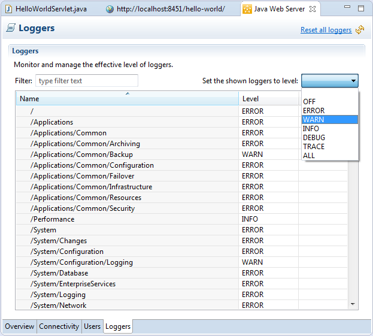
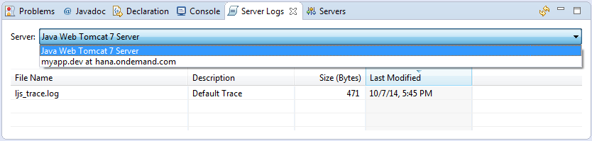

Using Logs in the Eclipse IDE
After deploying your Web applications, you can check their logs as well as configure their loggers settings. This section describes the following logging tasks you can perform in the Eclipse IDE:
- Changing the effective level of a particular logger
- Setting an effective level simultaneously for all the currently displayed loggers
- Viewing logs and log files
- Sorting loggers and log files
You can perform these operations both in the cloud and on a local server.
Also, persistence for loggers is enabled both on the cloud and on a local server level. Logger level settings are kept and restored on a server restart, so you do not need to set them over again.
- You have downloaded and set up your Eclipse IDE, SAP Cloud Platform Tools for Java, and
SDK.
For more information, see Setting Up the Development Environment.
- You have created and deployed a Web application that uses logging functionality on SAP Cloud Platform.
For more information, see Logging in Applications.
-
You are assigned a Developer or Administrator role. For more information about the roles, see Account Member Roles.
- After deploying an application in the Eclipse IDE on SAP Cloud Platform or SAP Cloud Platform local runtime, open the Servers view and double-click the server.
- Choose the Loggers tab.
- When the server is in [Started] state, all the available loggers are
listed in the Loggers table. If the server is in
[Starting], [Stopping], or
[Stopped] state, the table is empty.
- You can use the filter field to find particular loggers you need. You can filter by both the Name and the Level columns.
- You can also sort the loggers table by both the Name and the Level column. The Level column sorts the fields by effective level, not alphabetically.

- To change a logger level, go to the relevant row in the table and select the new log level from
the Level column.
You can configure as many loggers as you need.
- If you need to simultaneously set a log level for all the currently displayed loggers, go to
Set the shown loggers to level and select the desired
one.
Besides for all available server loggers in the table, this feature is also applicable for a list of loggers displayed after filtering.
- Save your changes using the Save button from the main menu or by pressing Ctrl + S.
- To refresh the loggers table, choose the button.
If you try to refresh your loggers before saving your changes, a dialog appears warning you that your changes will be lost.
- You can only set log levels when an application is running. Loggers are not listed if the relevant application code has not been executed.
- If you set a new log level for a parent logger, such as com.sap.core.js.admin.operations, the child loggers, for example, com.sap.core.js.admin.operations.AdminOperations and com.sap.core.js.admin.operations.internal.ErrorQueueHandler, automatically inherit the same log level. Override this mechanism, if necessary, by explicitly assigning a new log level to the child loggers.
If you have changed the effective level of some or all loggers of an application, running on a particular server, you have the option to reset the logger levels.
- Make sure you can restart your server without causing data loss.
- Click the Reset all loggers link. A dialog box appears, warning you that the resetting operation requires server restart.
- Choose Reset and Restart.
- In the Servers view, go to the context menu of your server and choose
 Show In
Show In  Server Logs
Server Logs  . Note If the server has never been started, no logs are available and the Server Logs view is empty.
. Note If the server has never been started, no logs are available and the Server Logs view is empty. - When the server is started, the Server Logs view displays all available
Default Trace and HTTP Access logs
of the applications that you are running on this server. Note You can also reach the Server Logs view if you expand the server and double-click on the Server Logs node.
- If you have more than one running servers, from the Server dropdown
box, select the one you need to view its logs.

- You can sort your log files by all columns.
- To refresh the log files table, choose the button.
- Double-click on a log to see its details in the Console. You can then:
- Open the log in an editor, choosing the button.
- Clear the log console, choosing the button.
- Close the log console, choosing the button.